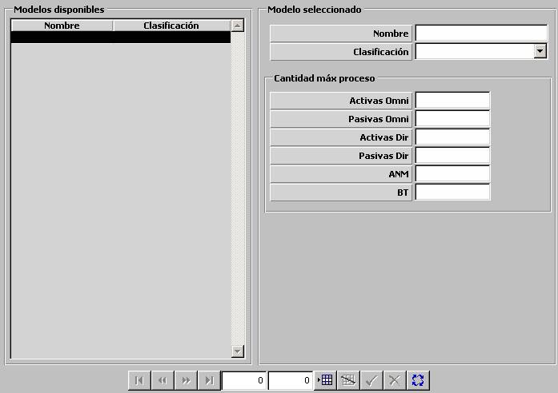

Procesador Sonoboyas

Descripción de los parámetros:
Cantidad Máxima de Proceso: Estos parámetros determinan las cantidades máximas de sonoboyas que pueden ser procesadas simultáneamente de cada tipo. El procesador de sonoboyas dispone de un número de canales que son empleados por cada tipo de sonoboya como sigue:
Pasiva Omni ⇒ 1 canal
Pasiva Dir o VLAD ⇒ 3 canales
Activa Omni ⇒ 2 canales
Activa Dir ⇒ 3 canales
ANM ⇒ 1 canal
BT ⇒ 1 canal
Por tanto el procesador tendrá un máximo de capacidad de proceso para cada tipo de sonoboya dependiendo del número de canales totales del procesador y el consumo de canales de ese tipo de sonoboyas. Se considera que el número de canales totales del procesador coincide con el valor introducido para número máximo de sonoboyas pasivas omni que puede procesar. La suma de todas las cantidades máximas no podrá superar a 200.
Los valores introducidos de cantidades máximas que pueden ser procesadas de los distintos tipos de sonoboyas deben tener en cuenta el número de canales que consumen, de forma que las cantidades máximas deberían guardar una proporción inversa a la que guardan los canales consumidos. No obstante, la Preparación no comprueba que los valores introducidos guarden esta proporción. Ver Modelística – Sensores – Procesador de Sonoboyas.
Algunos ejemplos de valores adecuados son:
| Pasiva Omni | 12 | 18 |
| Pasiva Dir o VLAD | 4 | 6 |
| Activa Omni | 6 | 9 |
| Activa Dir | 4 | 6 |
| ANM | 12 | 18 |
| BT | 12 | 18 |
Activas Omni: Cantidad máxima de sonoboyas tipo Activa Omni que pueden ser procesadas simultáneamente.
Unidades: ---
Rango: 0 – 200
Pasivas Omni: Cantidad máxima de sonoboyas tipo Pasiva Omni que pueden ser procesadas simultáneamente.
Unidades: ---
Rango: 0 – 200
Activas Dir: Cantidad máxima de sonoboyas tipo Activa Dir que pueden ser procesadas simultáneamente.
Unidades: ---
Rango: 0 – 200
Pasivas Dir: Cantidad máxima de sonoboyas tipo Pasiva Dir o VLAD que pueden ser procesadas simultáneamente.
Unidades: ---
Rango: 0 – 200
ANM: Cantidad máxima de sonoboyas tipo ANM que pueden ser procesadas simultáneamente.
Unidades: ---
Rango: 0 – 200
BT: Cantidad máxima de sonoboyas tipo BT que pueden ser procesadas simultáneamente.
Unidades: ---
Rango: 0 – 200